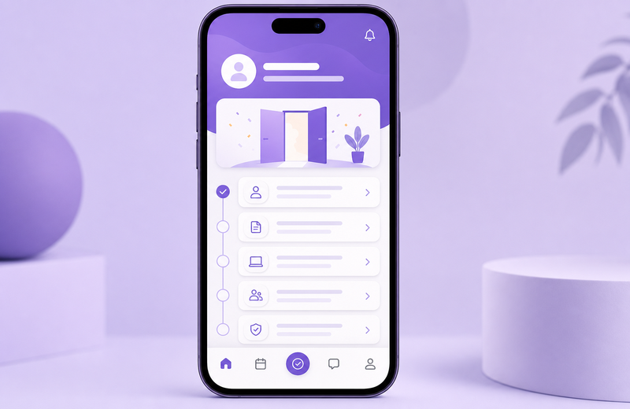

Étape / Module 1
Configuration initiale guidée.

Chaque écran = une intention claire.

Réduction de l'effort cognitif, copy orienté bénéfice et feedback immédiat.
Configuration initiale guidée.
Import et synchronisation des données.

Premiers insights et partage d'équipe.


Données éparpillées, décisions lentes.

Migration assistée en 48 h.

Une source de vérité partagée.


Voir une démo personnalisée.
Réserver une démo